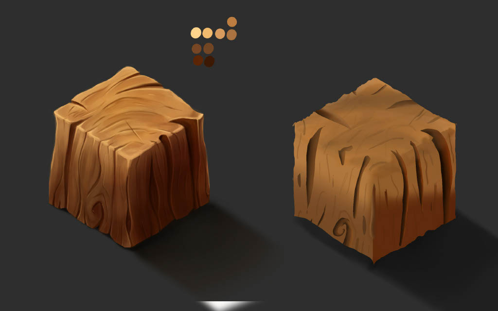
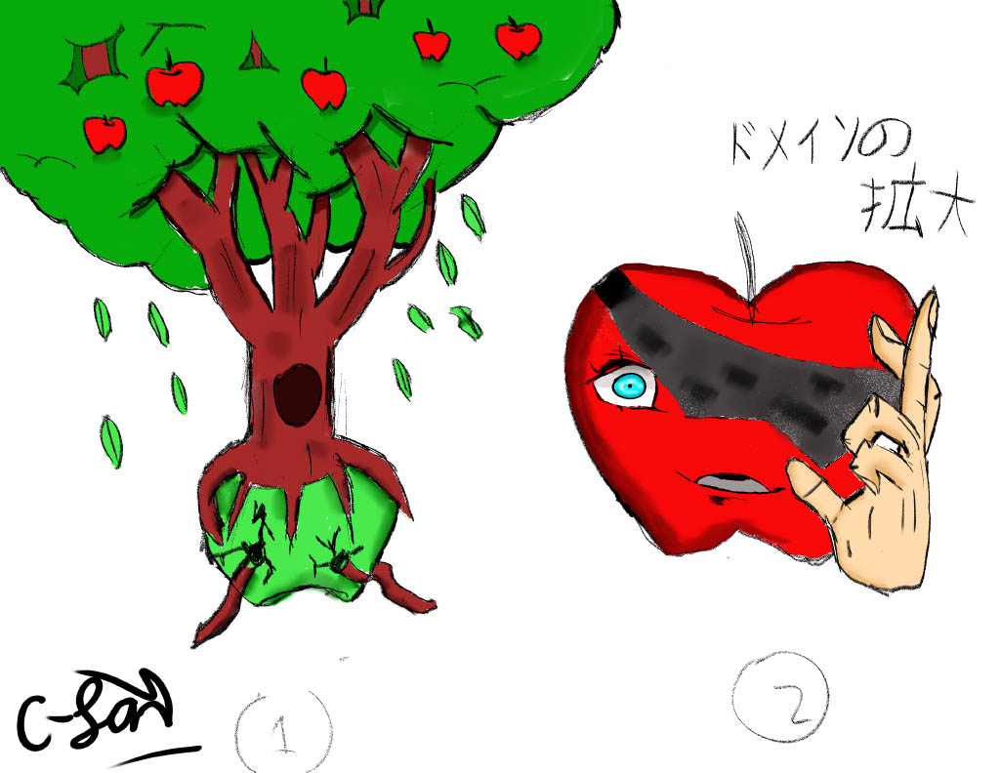
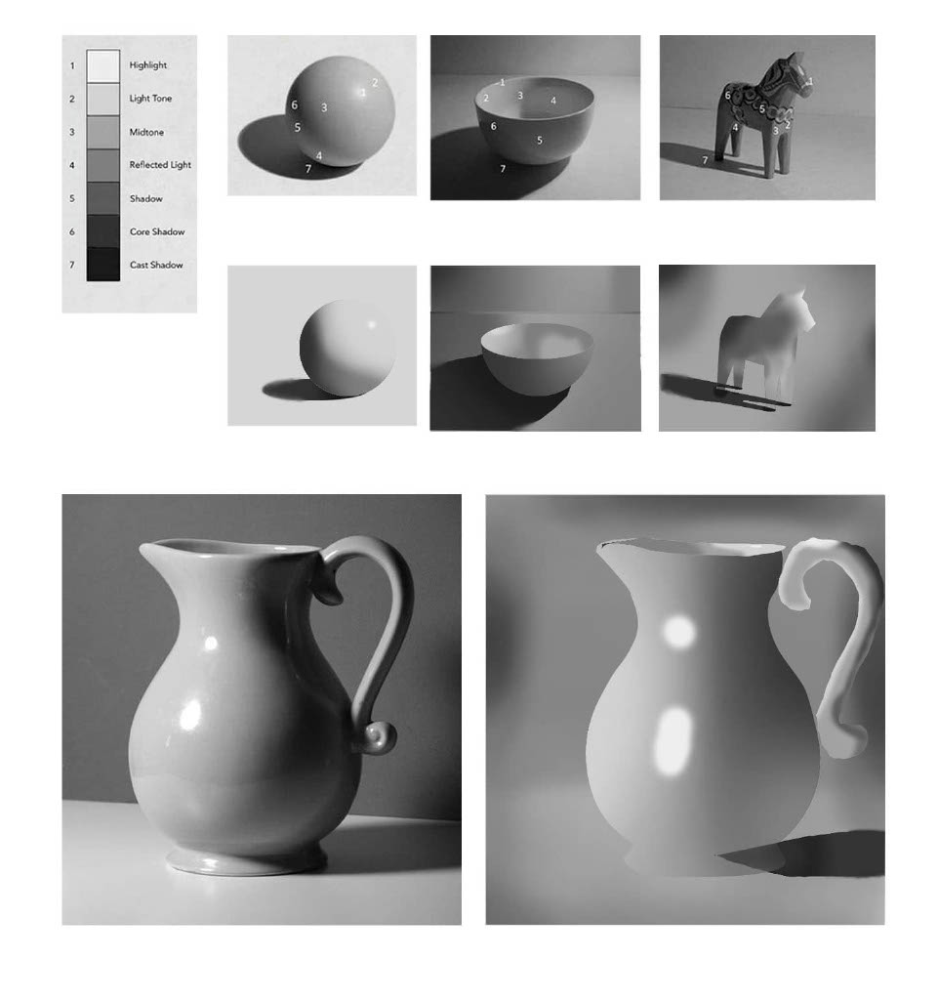
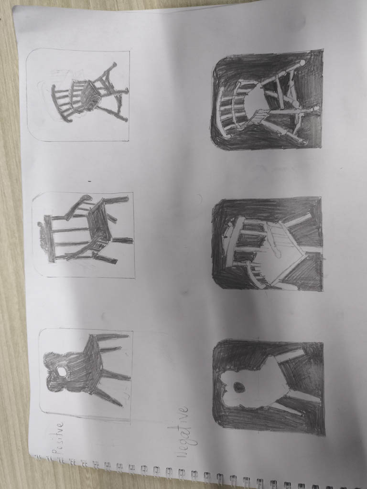
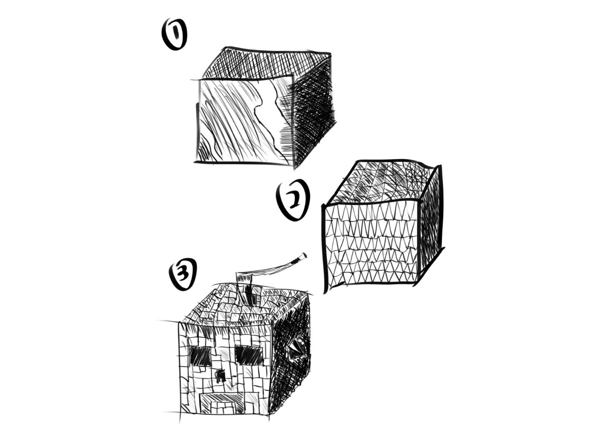

Games
My shipped and in-progress games will live here.
No games published yet — first project currently in development.
Check back soon, or ask me about it directly on the Contacts page.
Art & Dev Log
Studies and practice pieces from my art and design coursework.
 Character Art
Character Art
Rimrie — Original Character
My first character and one of my best works. She's the one who got me into art.
Illustration
Character Design

Texture StudyWood Texture Practice
An attempt at painting a convincing wood surface texture.
Texturing
Materials

Concept StudyApple Tree & Gojapple
A class assignment: turn anything into an apple.
Concept Art

Shading StudyShading Practice
Shading different objects — difficulty went from 0 to 100 real quick.
Rendering
Light & Shadow

Technique StudyInverted Image
An assignment about inverting an image while working in pencil.
Traditional Art

Texture StudyTexturing — No Color Edition
Different types of textures applied to a box, in grayscale.
Texturing
Grayscale
 Texture Study
Texture Study
Texturing — Rock, Water & Queso
Materials practice: rock, water, and cheese textures.
Texturing
Materials